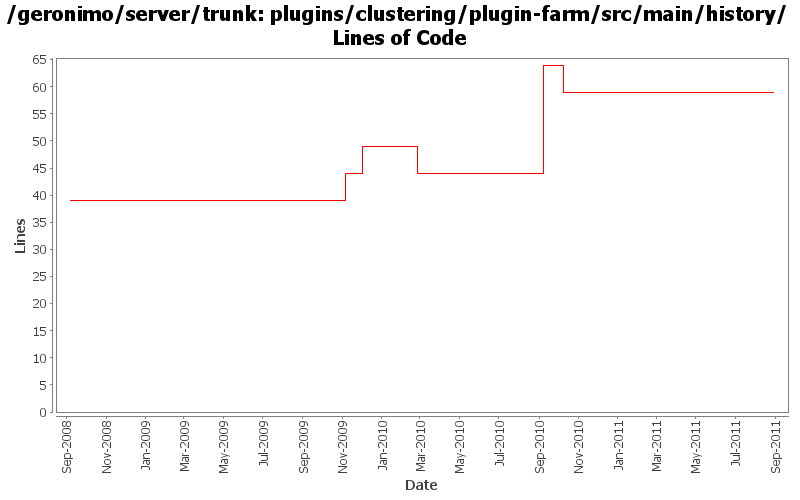

[root]/plugins/clustering/plugin-farm/src/main/history

| Author | Changes | Lines of Code | Lines per Change |
|---|---|---|---|
| Totals | 13 (100.0%) | 68 (100.0%) | 5.2 |
| djencks | 6 (46.2%) | 38 (55.9%) | 6.3 |
| rickmcguire | 3 (23.1%) | 26 (38.2%) | 8.6 |
| xuhaihong | 1 (7.7%) | 2 (2.9%) | 2.0 |
| dwoods | 2 (15.4%) | 2 (2.9%) | 1.0 |
| gawor | 1 (7.7%) | 0 (0.0%) | 0.0 |
Update dependencies.xml file, including bval and commons-jexl changes
2 lines of code changed in 1 file:
GERONIMO-5230 Add Bean Validation Support to the connector 1.6 implementation.
Changes to Geronimo base.
0 lines of code changed in 1 file:
restore default environment to the BValNamingBuilder, remove extraneous setAttribute() for PersistenceUnitGBean
20 lines of code changed in 1 file:
make sure to install ejb and management spec at the same time (management spec uses some ejb classes)
0 lines of code changed in 1 file:
fix problem in EarConfigBuilder when constructing sub-configurations for wars. Rename DeploymentContext.getBundle to getDependencyBundle to try to make it clearer that it is temporary and not always available. Start updating pluto/console stuff for pluto 2.
5 lines of code changed in 1 file:
clean up the clustering plugin build
6 lines of code changed in 1 file:
missed updating some jpa10 config and deployer depends
1 lines of code changed in 1 file:
update other XML files with embedded versions from 2.2-SNAPSHOT to 3.0-SNAPSHOT
1 lines of code changed in 1 file:
GERONIMO-4692 sort dependencies.xml, except for connector-1_6
12 lines of code changed in 1 file:
GERONIMO-4684, GERONIMO-4685 Use our tomcat build, configure tomcat using server.xml. Also includes some spec jar updates including using our jaxb spec jar
16 lines of code changed in 1 file:
GERONIMO-4284 Add a separate datasource for plugin farm
5 lines of code changed in 1 file:
GERONIMO-4284 beginnings of plugin based farm management
0 lines of code changed in 2 files: